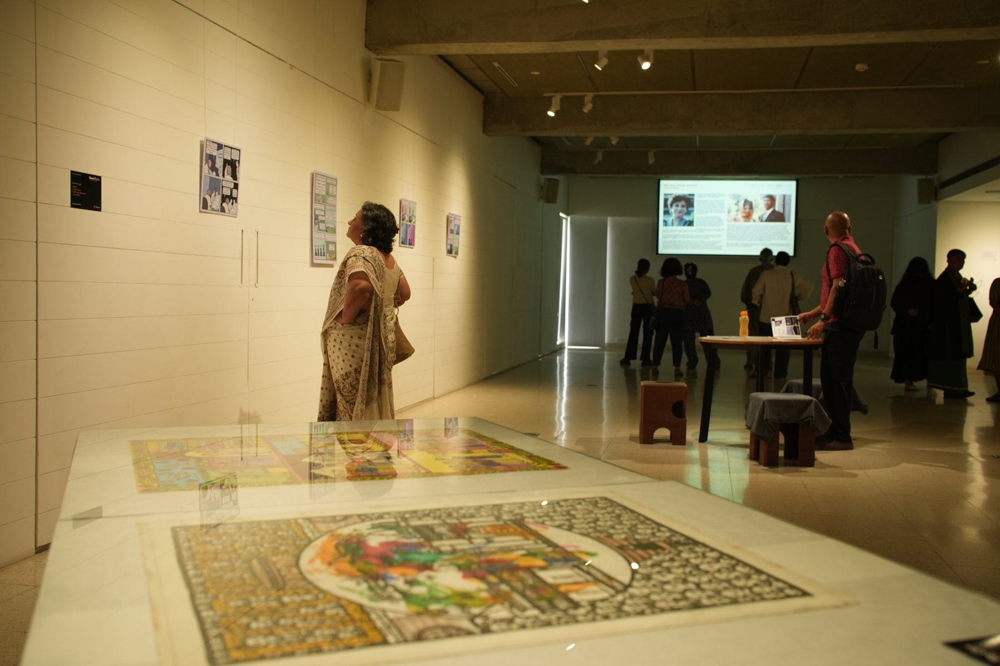
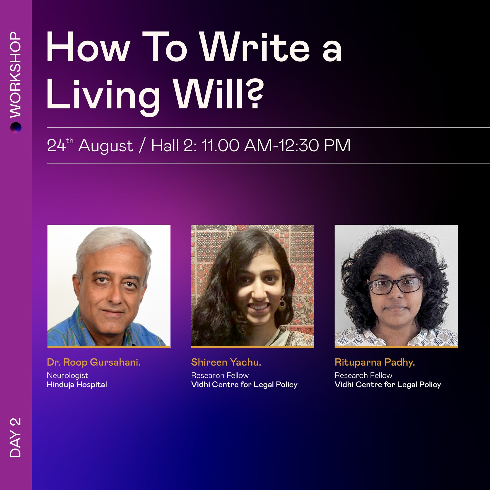
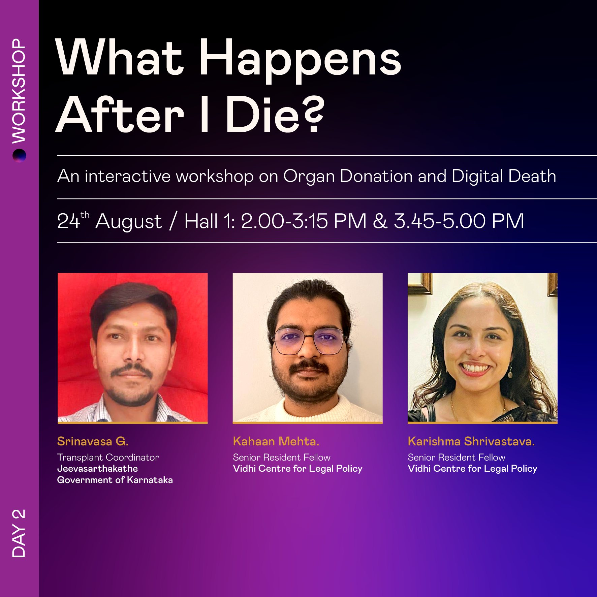
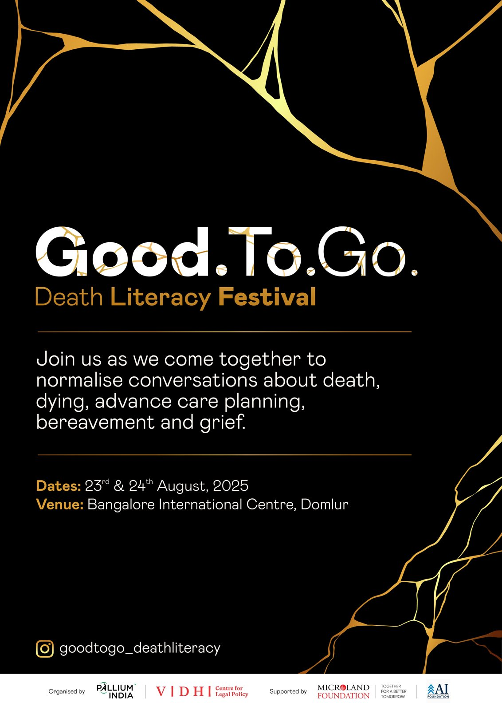
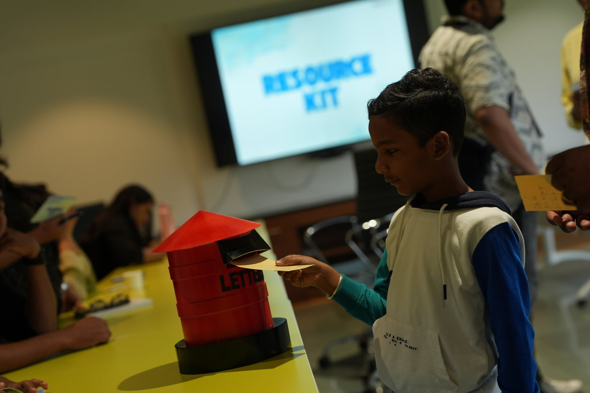
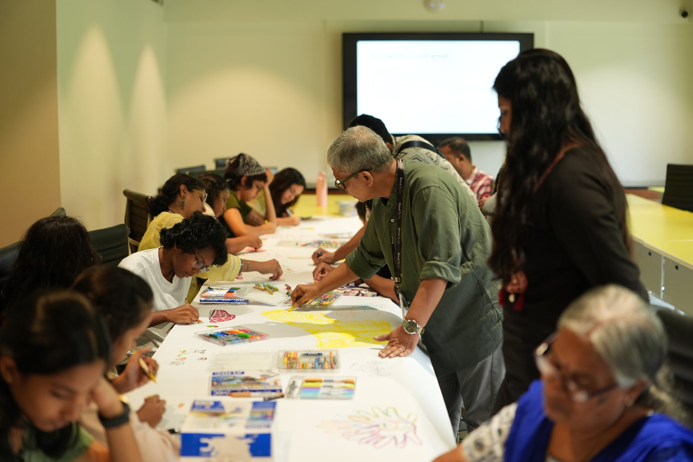
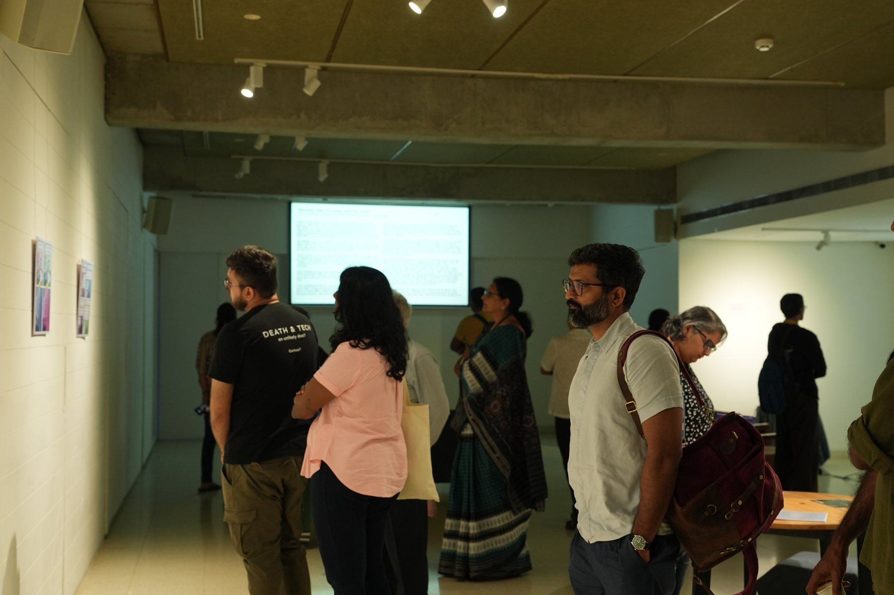
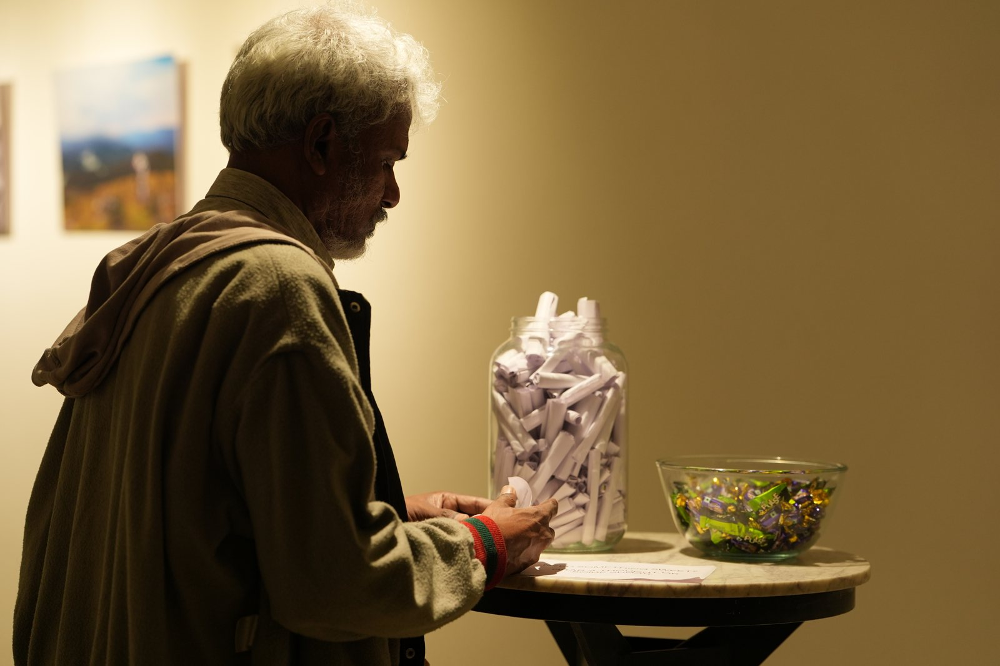

Good To Go
India's first death literacy festival. Two days of open conversation about death, dying and grief.

- ROLE
- Curator
- WHEN
- 23–24 August 2025
- WHERE
- Bangalore International Centre, Domlur
- BY
- Pallium India × Vidhi Centre for Legal Policy
We rarely talk about death until we have to. The festival made room to talk about it earlier, and more gently.
Despite a Supreme Court ruling that makes living wills legal, few people in India know how to plan for the end of life, or how to negotiate with the healthcare system when the time comes. Good To Go set out to change that, starting in Bengaluru, with the hope of travelling to other cities.
Mended with gold
I conceptualised the festival's identity around kintsugi, the Japanese art of repairing broken pottery with gold. In kintsugi the break isn't hidden; it becomes part of the object's story. That felt right for a festival about loss, grief and care.
Gold seams run across a black ground through the posters, social media, stage screens and signage, so that a difficult subject arrives with warmth rather than gloom.
Curating the programme
The programme moved from the practical to the personal. Workshops like How To Write a Living Will? and What Happens After I Die?, on organ donation and digital death, gave people concrete tools. Panels brought together palliative care doctors, lawyers, caregivers and people who have lost someone.
Children had their own track. Circle of life… the invisible connection used play to talk about life and loss, and a letterbox invited them to write to someone they missed. A gallery of artworks and installations gave space for quieter reflection between sessions.







CREDITS & SUPPORT
Presented by
 Supported by
Supported by